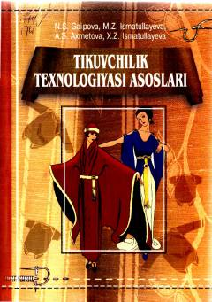

TTTikuvchilik texnologiyasi asoslari va kiyim ishlab chiqarish jarayonlari haqida o'quv qo'llanma.
Ushbu o'quv qo'llanmada ayollar va bolalar yengil kiyimlarini yakka buyurtma asosida va ommaviy tarzda ishlab chiqarishda qo'llaniladigan tikuvchilik texnologiyasi asoslari bayon etilgan. Unda kiyim turlari, qo'lda va mashinada bajariladigan ishlar, namlab-isitib ishlash hamda detallarga ishlov berish bo'yicha umumiy ma'lumotlar berilgan. Qo'llanma pedagogika oliy o'quv yurtlari talabalari va kasb-hunar kollejlari o'quvchilari uchun mo'ljallangan.